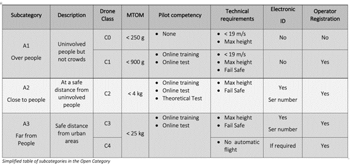
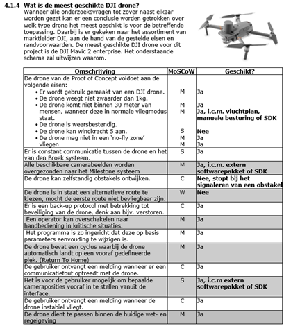

×
Verwerken onderzoek
Aangezien het onderwerp nog relatief nieuw is, viel er ook veel uit te
zoeken. Samen met verschillende mensen binnen het bedrijf hebben we gekeken
naar belangrijke punten over het onderwerp. Deze punten hebben we gefilterd
op prioriteit en de belangrijkste onderwerpen zijn vervolgens verdeeld over
ons drie. Hierdoor had ieder een eigen gebied om te onderzoeken.
Leon- Limieten en regelgeving
Gedurende Het onderzoek heb ik ontdekt dat er extreem veel haken en ogen
zitten aan het vliegen met drones. Zo is er bijvoorbeeld een vliegbewijs
nodig wanneer de drone zwaarder is dan 250g. Daarnaast is het zelfs bij een
professionele drone verplicht om deze te verzekeren wanneer er een camera
onder hangt.
Vliegbewijs per type drone:

Flowchart om te mogen vliegen met een drone:
Jeroen- Dronekeuze
In dit gedeelte van het onderzoek heeft Jeroen gekeken naar de eisen vanuit
het bedrijf en welke drones daar het best bij passen. Van den Broek Systemen
gaf vóór het onderzoek aan dat een drone van marktleider DJI de voorkeur zou
hebben boven andere merken. Om deze hebben we het onderzoek beperkt tot de
verschillende drones van deze fabrikant.
Na grondig onderzoek bleek dat er slechts een klein deel van de DJI drones
paste bij de eisen vanuit het bedrijf. Deze drones zijn vervolgens verder
onder de loep genomen en er werd gekozen voor de DJI Mavic 2 Enterprise als
meest geschikte drone.

Roel- Milestone
In dit deel van het onderzoek is er onderzocht naar de mogelijkheden van het
door Van den Broek gebruikt softwaresysteem Milestone. Hierbij was de vraag
hoe Milestone benaderd kan worden door andere applicaties en welke data er
allemaal beschikbaar is vanuit Milestone. Uit ons onderzoek bleek dat
Milestone heel erg toegankelijk is voor zelf gefabriceerde applicaties en
dat de connectie tussen deze applicaties en Milestone goed mogelijk is.
In onderstaand plaatje is te zien dat Milestone beschikt over allemaal
Software Development Kits(SDK) waarmee deze applicaties te koppelen zijn aan
Milestone. In de volgende fase van het project was het dus uitzoeken welke
SDK’s nuttig voor ons konden zijn voor de drone.
Zo waren er bijvoorbeeld SDK’s die alle alarmen vanuit Milestone
binnenhaalde, nu was het voor ons de taak om deze alarmen te koppelen aan
het andere UGcS softwarepakket.
Zoals eerder besproken werden de sprints 2 t/m 4 pas na de onderzoeksfase in
detail vormgegeven. De opleverdatums bleven daarbij onveranderd. We hebben
aan de hand van de belangrijkste eisen van Van den Broek bepaald wat er wel
en niet in elke sprint past, gekeken naar de tijd. Hierdoor bleef de
planning intact en werkten we volgens schema.